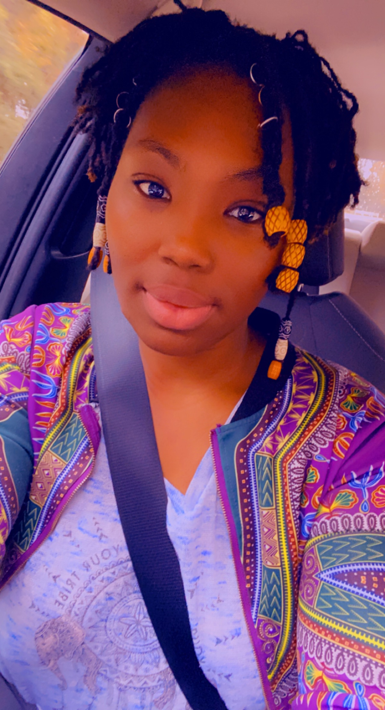

Portfolio

About Me
I am a new software developer looking for afro-diaspora projects to join in United States.
- I am intriugied around the ideas of apps and their conception. I get excited at thinking about the oppurtunity to make a new one.
- Passionate about learning, mysteries, and puzzles.
- I fell in love wtih techonology when I got my first iMac in 2001.
Before embracing my "techie" indentity, I was a wandering soul looking for somewher eto belong. I have been in many different industies and many possitions to find what I really wanted to do. When the COVID-19 pandemic hit, I was left to work as a Independent Contractor/ Driver for Doordash. In 2022, I decided to start my new journey through Thiknful Bootcamp to become a software; and I have found so much satisfication in the challenges, the puzzles, and he results of creating something that can possibly be a stepping stone to moving the direction of the world.
Working
I have not worked in many traditional 9-5 hourly jobs as these jobs were never appealing to me. So, working with others honestly will be a partially new thing for me. I have not been on many teams before and I have no idea what to really expect. I like working jobs where I have to prove myself. These jobs give me great satisfaction as my goal is to be better than I was yesterday. The jobs where:
- There are no time constraints but
when the work needs to be done
- Micromanaging is an obsolete factor
- And flexiblilty is a priorty
are the types of jobs I apply myself to. Being able to maneuver in life comfortably is very important to me. I love traveling with my children going to see new things and becoming students of the world's many places. Having a job that can support me and my little family is beneficial an necessary.
I'm up for the conversation!
Contact
Being a mother of two, a new business owner, working towards my business degree, and now working on towards a different path with Software Engineering ,
I am not always available, but the quickest ways to contact me are: